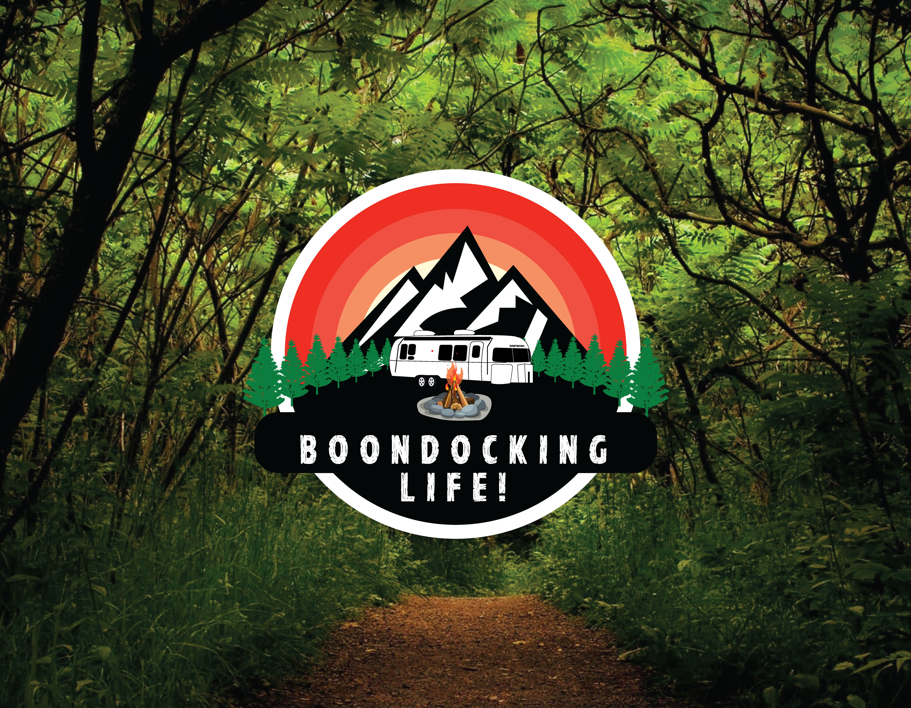

MOST CREATIVE SHOOT

The Forest is a 2016 American supernatural horror film directed by Jason Zada and written by Ben Ketai, Nick Antosca, and Sarah Cornwell. Starring Natalie Dormer and Taylor Kinney, it follows a young woman who travels to Aokigahara (the suicide forest) to find her sister.
POPULAR IMAGE


The Forest is a 2016 American supernatural horror film directed by Jason Zada and written by Ben Ketai, Nick Antosca, and Sarah Cornwell. Starring Natalie Dormer and Taylor Kinney, it follows a young woman who travels to Aokigahara (the suicide forest) to find her sister.
FOREST SIDE


The Forest is a 2016 American supernatural horror film directed by Jason Zada and written by Ben Ketai, Nick Antosca, and Sarah Cornwell. Starring Natalie Dormer and Taylor Kinney, it follows a young woman who travels to Aokigahara (the suicide forest) to find her sister.